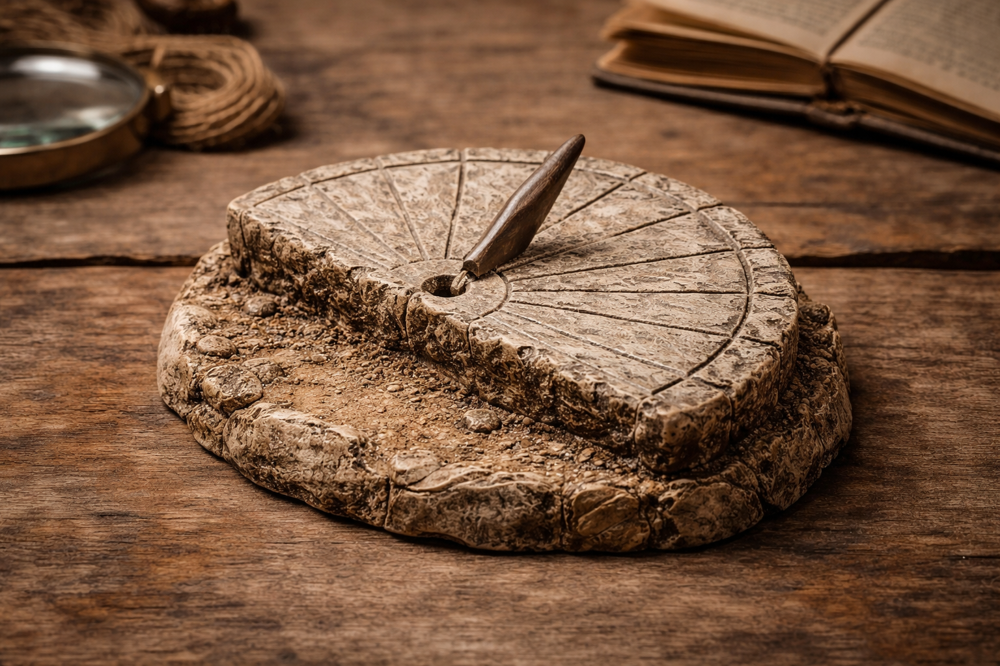
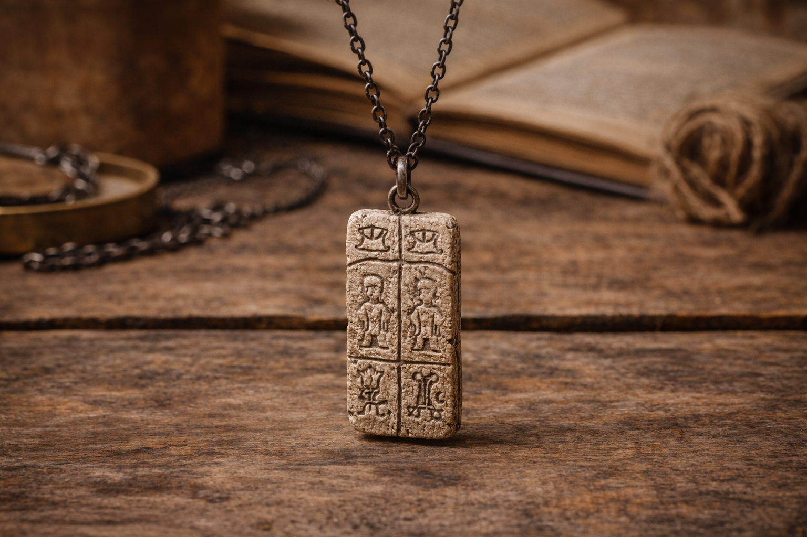

Archaeology
Basalt Sun Dial Fragment

Basalt Sun Dial Fragment
Replica inspired by the Basalt Sun Dial Fragment (Archaeology Collection). Material: Cast resin with stone-texture finish. Found at: Nareth Basin Plateau, Site L-14. Purpose: Desk display model inspired by an ancient time-marking stone.
$2410.99

Boundary Pillar Motif Necklace
Replica from the Archaeology Collection, inspired by the Carved Boundary Pillar Fragment. Material: stone-like resin with carved geometric motifs. Location reference: Karan Ruins perimeter, Terrace Trench T-6. Purpose: wearable keepsake inspired by ancient boundary markers.
price: $1290
Mini Ceramic Storage Jar Replica
Replica inspired by the Archaeology Collection’s Reconstructed Ceramic Storage Vessel. Material: hand-finished clay with matte glaze. Location reference: Tel Arven, Lower Settlement Mound. Purpose: decorative keepsake inspired by ancient domestic storage vessels.
price: $2160
Archaeologist Field Notebook
Replica inspired by the Archaeology Collection’s excavation records from Site L-14 and the Karan Ruins perimeter. Material: genuine leather cover with stitched binding and archival-quality paper. Location reference: Nareth Basin Plateau and Terrace Trench T-6. Purpose: field documentation notebook inspired by traditional archaeological survey journals.